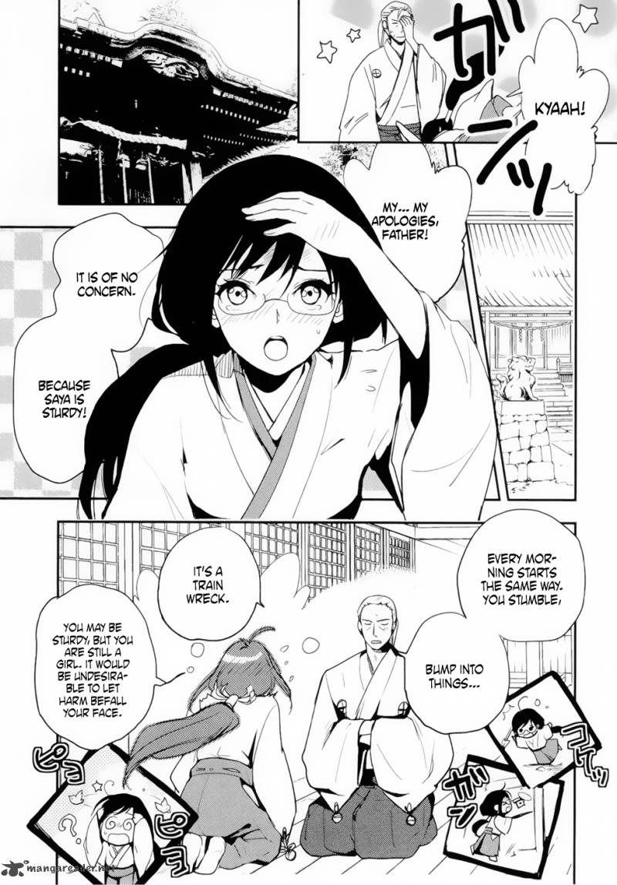

Blood-C
by CLAMP
Saya Kisaragi is a cheerful high school student who lives a seemingly peaceful life with her father, a Shinto priest. By night, she wields a sacred sword to fight Elder Bairns, monstrous creatures that prey on humans. As Saya continues her battles, strange events and disturbing revelations begin to unravel the truth about her town, her memories, and her true identity.
Synopsis
Chapter 1

Saya Kisaragi begins another day in her quiet town, singing cheerfully as she heads to school. Although she appears to be an ordinary student, she has a secret duty: protecting people from terrifying creatures known as Elder Bairns.
Armed with her sacred sword, Saya confronts the monsters that threaten her community. Yet as the battles grow increasingly brutal and the people around her behave strangely, she begins to question whether her peaceful life is hiding something far more sinister.
— End of chapter —